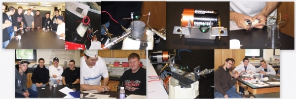

PHY 110 - Automotive Physics


Applied Physics, 8/E
Acquire this textbook ASAP, and bring it in to all our classes.
You can find it listed on Amazon, at our campus bookstore, etc.
Required textbook:
Applied Physics, 8/E
by Ewen, Shurter, Gundersen
Publisher: Prentice Hall
Acquire this textbook ASAP, and bring it in to all our classes.
You can find it listed on Amazon, at our campus bookstore, etc.
Announcements
Work on good grades at the beginning of the semester! Do not hope for miracles at the end!
If you miss more than 2 lab reports you will fail the course (see Course Outline). Lab attendance is based on the completion of the experiment and the required lab report.
Course Documents
All material presented here is intended for students of Suffolk County Community College ONLY.
Do NOT use/copy/reproduce it otherwise.
Course Syllabus and Grading Guidelines
Course Outline Section XXX
PowerPoint slides corresponding to material presented before exam 1, 2, 3, 4, 5.
LABS:
Do you need graph paper? Choose (10 lines/cm, 5 lines/cm, 8 lines/inch) and print.
Lab instructions can be found below:1) One dimensional horizontal motion (x and v versus t)
2) One dimensional vertical motion (ball toss, get g)
3) Two dimensional motion (projectile motion)
4) Newton's second law (force sensor and accelerometer)
5) Coefficient of static and kinetic friction (force sensor)
6) Types of collisions (air tracks)